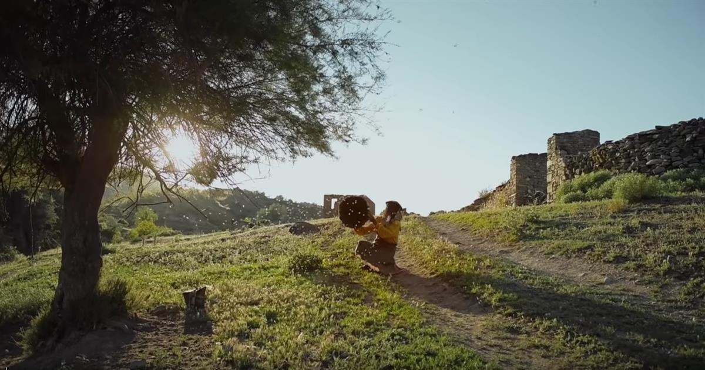
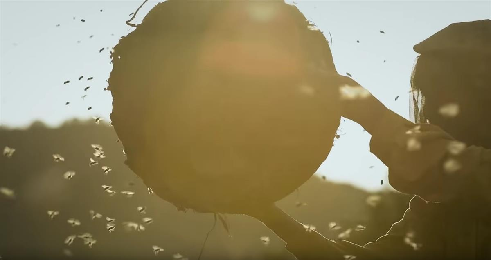
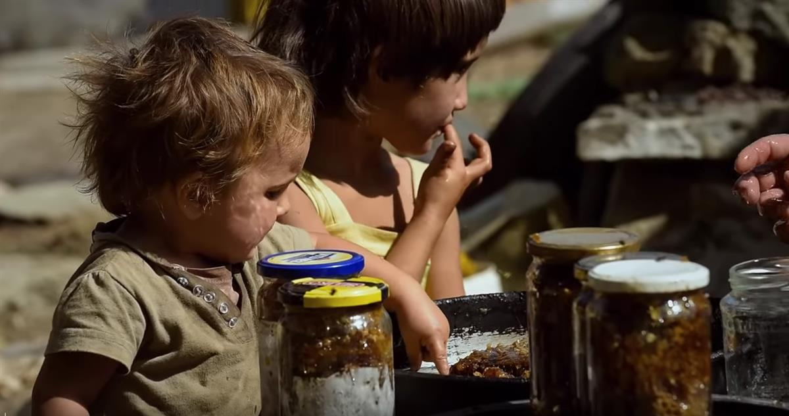
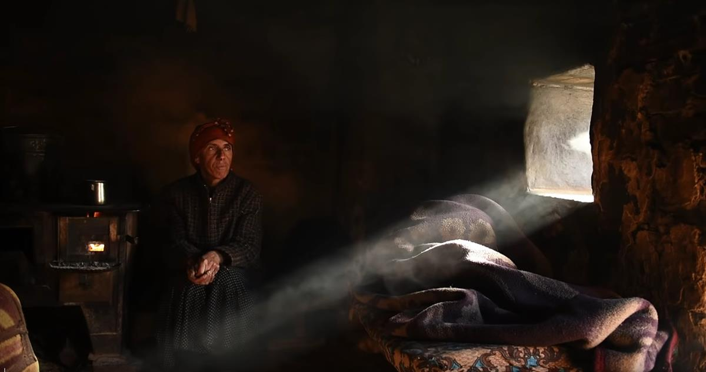
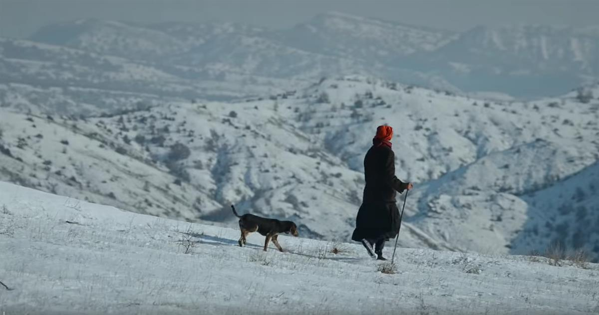
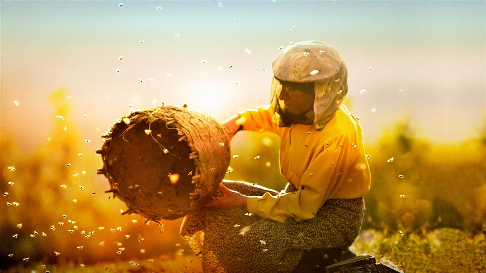

In a deserted Macedonian village, Hatidze, a 50-something woman, trudges up a hillside to check her bee colonies nestled in the rocks. Serenading them with a secret chant, she gently maneuvers the honeycomb without netting or gloves. Back at her homestead, Hatidze tends to her handmade hives and her bedridden mother, occasionally heading to the capital to market her wares. One day, an itinerant family installs itself next door, and Hatidze’s peaceful kingdom gives way to roaring engines, seven shrieking children, and 150 cows. Yet Hatidze welcomes the camaraderie, and she holds nothing back—not her tried-and-true beekeeping advice, not her affection, not her special brandy. But soon Hussein, the itinerant family’s patriarch, makes a series of decisions that could destroy Hatidze’s way of life forever.







SOURCE: HONEYLAND
DISTRIBUTION: DOGWOOF